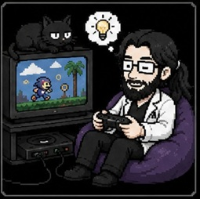

§ Autoria e Manutenção
Professores responsáveis
Esta árvore é produto coletivo da disciplina de pós-graduação Behaviorismos Modernos, ministrada no PPGAC-UEL pelo CRIACOM — Grupo de Pesquisa em Criatividade e Comportamento.

Hernando Borges Neves Filho
Professor · PPGAC-UEL · CRIACOM
Pesquisador em análise do comportamento, design de jogos comportamentais e behaviorismos contemporâneos. Coordenador do CRIACOM e idealizador desta árvore.
Currículo LattesYulla Christoffersen Knaus
Professora · PPGAC-UEL · CRIACOM
Pesquisadora em análise experimental do comportamento, cognição comparada e metodologia de sujeito único. Co-diretora do CRIACOM e co-responsável pela disciplina Behaviorismos Modernos.
Currículo Lattes